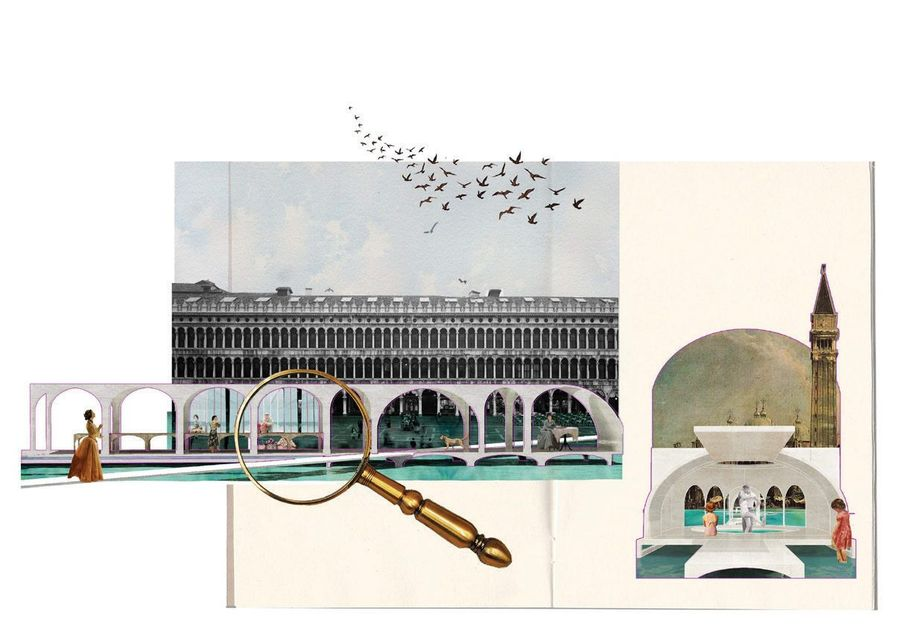
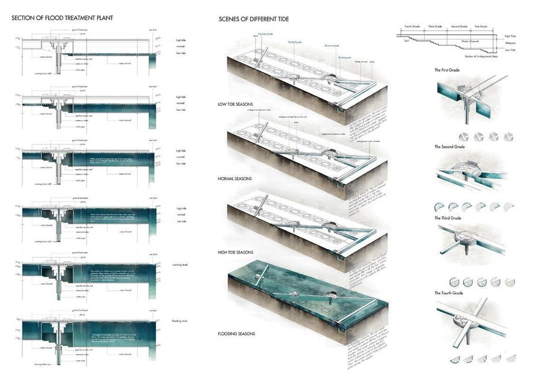

Beautiful decay
- Place
- Venice, Italy
- Year
- 2016
- Type
- Academic work
- Supervisor
- Albertus Wang, Francesco Cappellari
- Award
- 2nd Prize, Overseas Operations of Architectural Institute, 2016

Landscape as media between public life and nature, in a Venice that floods on schedule.
正文是我根据原书 p58/p59 的零散文字和图纸重写的草稿
Acqua alta — the exceptional tidal peaks of the northern Adriatic — floods Piazza San Marco on a predictable rhythm. The project treats that flooding not as a failure to be engineered away but as the condition the public space is built around.

Based on the arcade, the basic form is disassembled and reassembled: changes in height are tied to the flood levels, producing a rich variety of conditions that adapt to different activities and echo the existing structure of the square.

 Next projectCircular CommunityRotterdam, NL, 2018
Next projectCircular CommunityRotterdam, NL, 2018